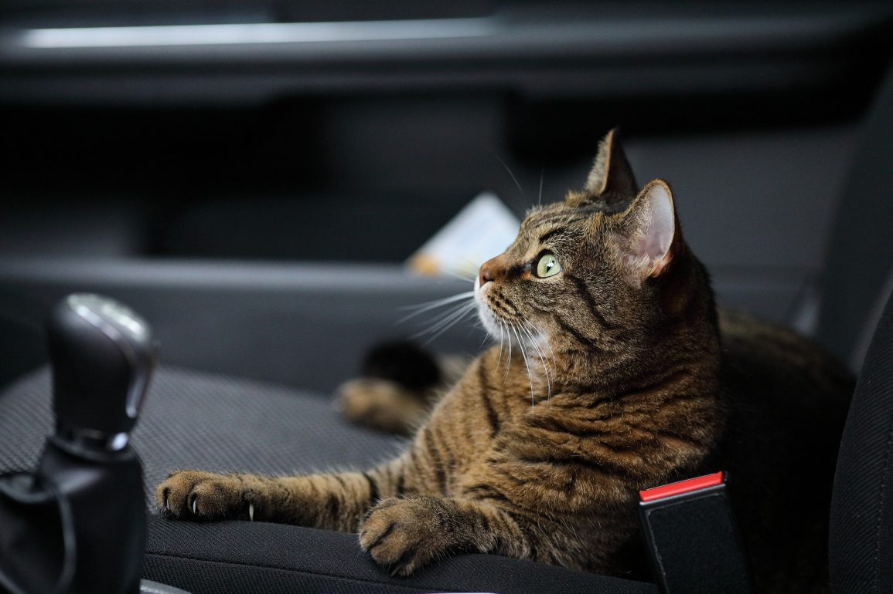
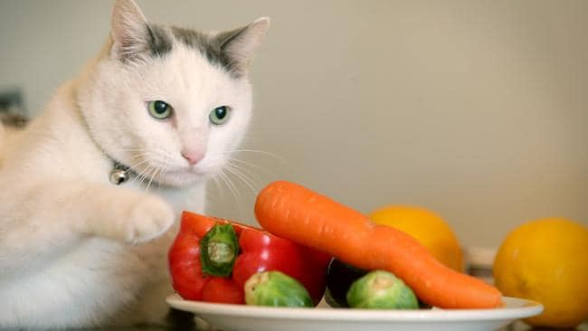

NEWS

The Right Diet for Senior Cats
Cats’ physiology change as they grow older. Like us, they experience changes like grey hair, loss of sight and hearing as they grow older. The growth and evolution of their needs makes them require more hands-on care and a special diet for senior cats. As a pet owner, it’s important to be aware of your ... Read More

10 Warning Signs of Cancer in Dogs
Cancer is a word no person wants to hear from their doctor or veterinarian. But unfortunately, it is a common diagnosis in dogs. According to the National Canine Cancer Foundation (NCCF), cancer is detected in one in three dogs and is a leading cause of death in dogs over 10. It’s important that owners are aware ... Read More

Airline Pet Requirements You Need to Know
Pets on and off planes have been in the news a lot lately. Whether or not you have a pet for medical reasons, most airlines will allow your friend to travel with you. You just need to follow the specific airline pet requirements set by the airline you’re flying on. Each airline varies in its restrictions, but those ... Read More

3 Tips for Traveling With Cats In a Car
Traveling with cats in a car can be very difficult, especially if they are not used to being in a moving vehicle. Cats can become frightened and stressed very easily while outside the familiarity of their home. It may be challenging to travel with a cat, but it’s not impossible. If you can’t get a friend or neighbor ... Read More

Thing as a Vegan Cat Diet?
If you’re vegan, you probably want to put your cat on a similar diet. Don’t. A vegan cat diet doesn’t exist as cats need taurine from meat to survive. Anybody switching to a vegan diet wants the support of their family and pets to help them transition. Although a plant-based diet might be good for ... Read More

Dealing with Ticks in Dogs
One of the most common dilemmas faced by dog owners is dealing with ticks in dogs. They are almost invisible to the naked eye and are pretty hard to avoid as they inhabit many different environments. Ticks can cause some pretty serious diseases to your pet, so it’s important to identify and get rid of ... Read More

| Company | Contact | Country |
|---|---|---|
| Alfreds Futterkiste | Maria Anders | Germany |
| Centro comercial Moctezuma | Francisco Chang | Mexico |
| Ernst Handel | Roland Mendel | Austria |
| Island Trading | Helen Bennett | UK |
| Laughing Bacchus Winecellars | Yoshi Tannamuri | Canada |
| Magazzini Alimentari Riuniti | Giovanni Rovelli | Italy |